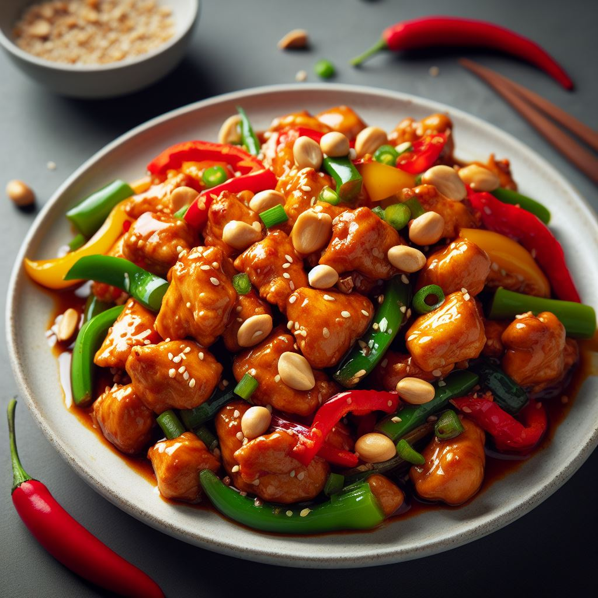
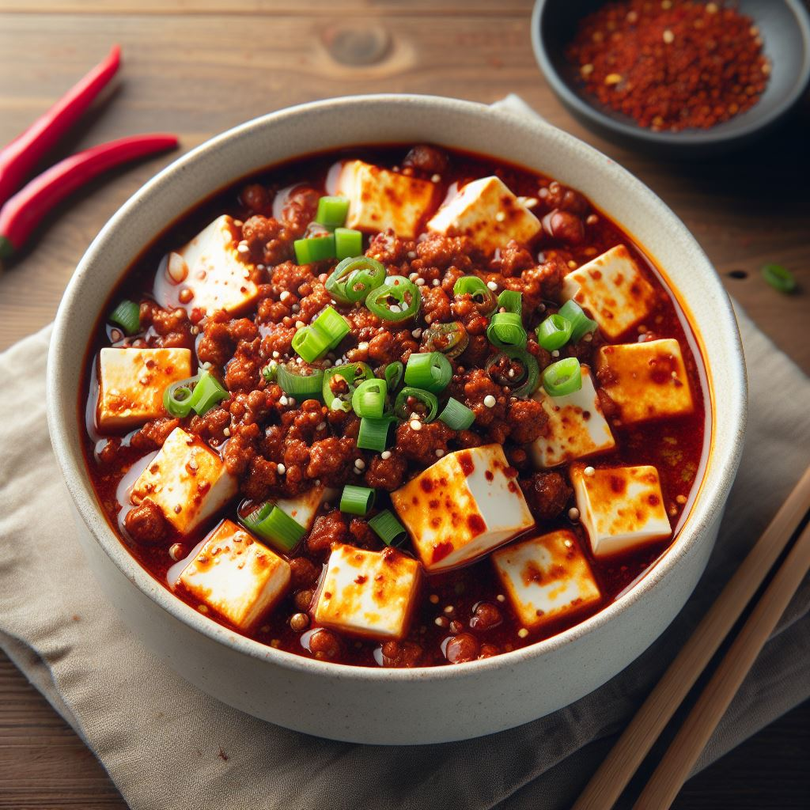
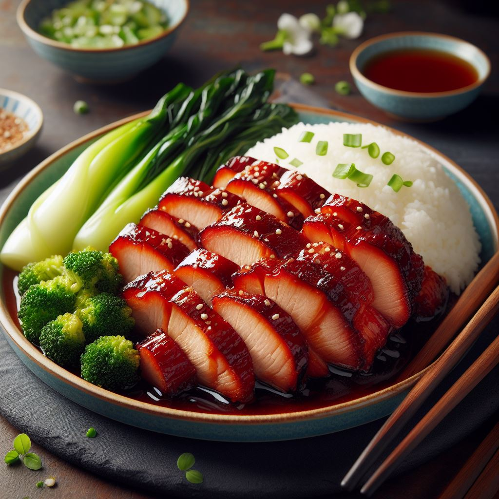
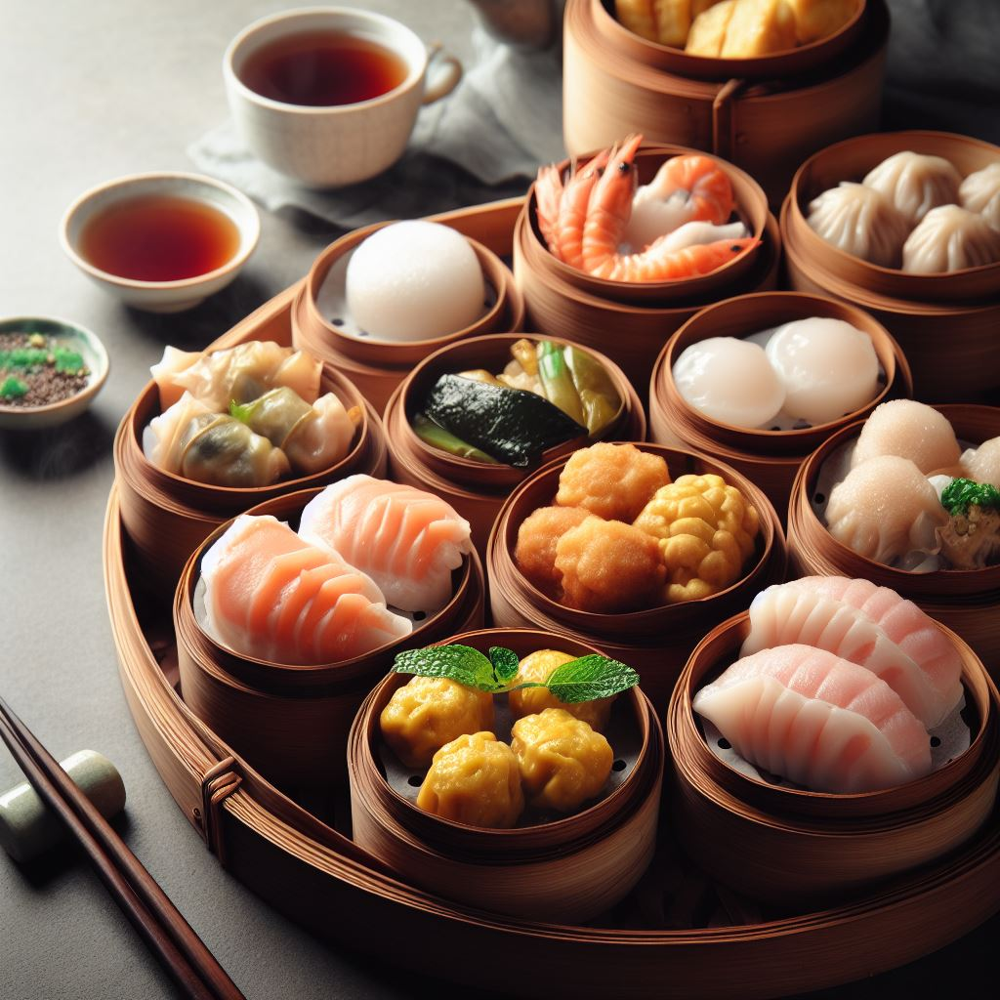
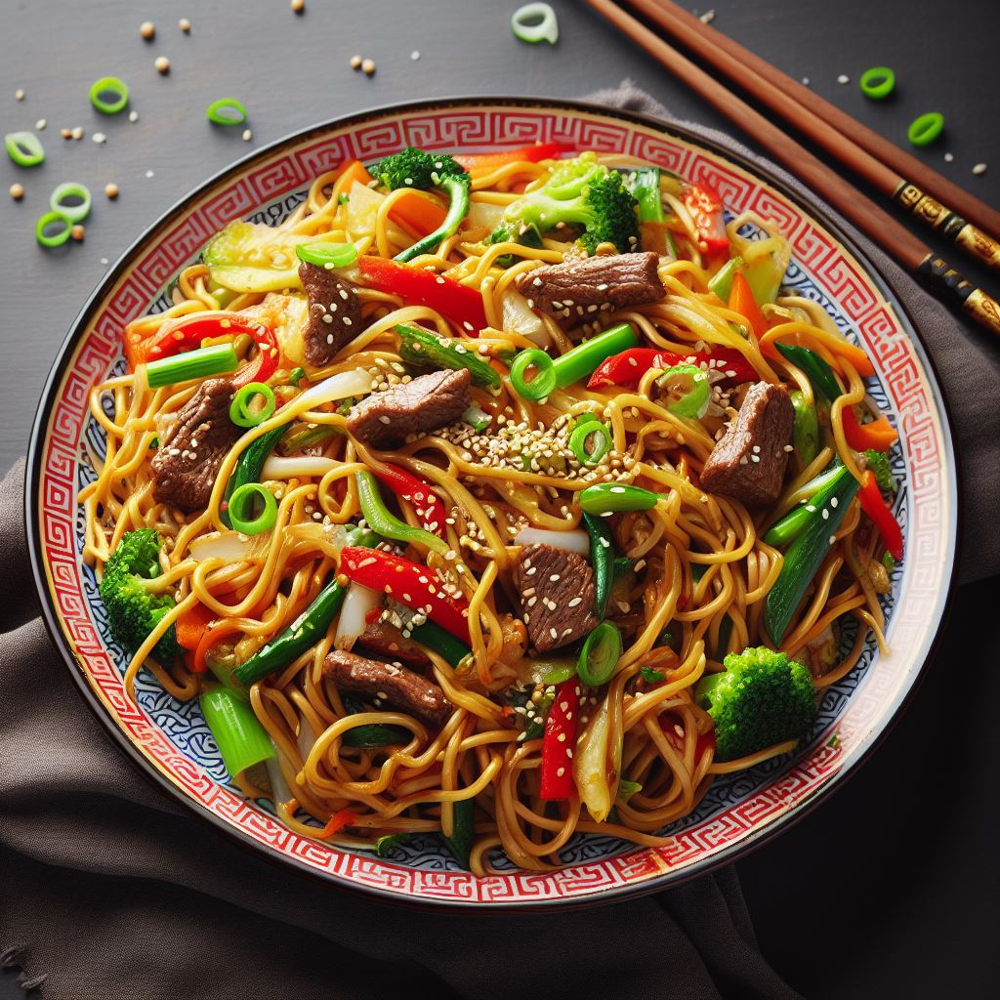
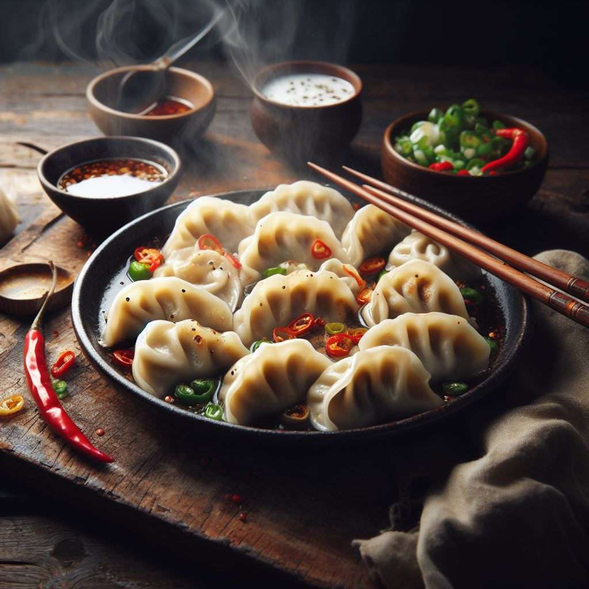

-

Kung Pao Chicken
Preparation Time: 30 minutes
Ingredients:
- 1 lb chicken breast, diced
- 1/2 cup peanuts
- 3-4 dried red chilies
- 2 cloves garlic, minced
- 1-inch piece of ginger, minced
- 3-4 green onions, chopped
- 1/2 cup diced red bell pepper
- 2 tablespoons soy sauce
Recipe:
- Heat oil in a wok and stir-fry dried chilies, garlic, and ginger until fragrant.
- Add chicken and cook until it turns white. Add peanuts, soy sauce, and red bell pepper.
- Saute until chicken is cooked through and the sauce thickens.
- Garnish with green onions and serve hot.
-

Mapo Tofu
Preparation Time: 45 minutes
Ingredients:
- 1/2 lb ground pork
- 1 block of soft tofu, diced
- 2 cloves garlic, minced
- 1-inch piece of ginger, minced
- 2-3 dried red chilies
- 2 tablespoons chili bean paste
- 2 tablespoons soy sauce
Recipe:
- Heat oil in a wok and stir-fry garlic, ginger, and red chilies until fragrant.
- Add ground pork and cook until browned. Add chili bean paste and soy sauce.
- Stir in diced tofu and cook until heated through.
- Serve hot and enjoy the spicy Mapo Tofu!
-

Char Siu
Preparation Time: 4 hours
Ingredients:
- 1 lb boneless pork shoulder
- 2 cloves garlic, minced
- 1-inch piece of ginger, minced
- 2 tablespoons honey
- 2 tablespoons hoisin sauce
- 2 tablespoons soy sauce
- 1 tablespoon oyster sauce
Recipe:
- In a bowl, mix garlic, ginger, honey, hoisin sauce, soy sauce, and oyster sauce to create the marinade.
- Marinate the pork shoulder in the mixture for at least 3 hours, but overnight is best.
- Preheat your grill or broiler. Grill the pork until it's cooked through, turning and basting with the marinade as needed.
- Once cooked, let it rest for a few minutes, then slice and serve your delicious Char Siu!
-

Dim Sum
Preparation Time: Varies
Ingredients:
- For Shumai:
- Ground pork or shrimp
- Minced ginger
- Minced garlic
- Soy sauce
- Sesame oil
- Wonton wrappers
- For Har Gow:
- Shrimp
- Cornstarch
- Bamboo shoots
- Ginger
- Rice flour
- Wheat starch
- For Char Siu Bao:
- Chinese barbecue pork (Char Siu)
- Hoisin sauce
- Sesame oil
- Scallions
- Steamed bun dough
- For Egg Tarts:
- Egg custard filling
- Butter or lard pastry crust
- Sugar syrup
Recipe:
- Shumai: Mix ground pork or shrimp with minced ginger, garlic, soy sauce, and sesame oil. Place the mixture in wonton wrappers, pleat the edges, and steam until cooked.
- Har Gow: Prepare a translucent dough from a mixture of rice flour and wheat starch. Fill it with a mixture of shrimp, bamboo shoots, and seasonings. Steam the dumplings until the skin becomes translucent.
- Char Siu Bao: Make a fluffy steamed bun dough, fill it with a mixture of Chinese barbecue pork, hoisin sauce, sesame oil, and scallions. Steam until the buns are cooked.
- Egg Tarts: Create a buttery or lard pastry crust, fill it with egg custard, and bake until the custard sets, creating a silky texture.
Dim Sum is a diverse range of small, flavorful dishes traditionally enjoyed at teahouses. It includes dumplings, buns, rolls, and desserts, offering a delightful combination of flavors and textures.
-

Chow Mein
Preparation Time: 20 minutes
Ingredients:
- 8 oz chow mein noodles
- 1/2 lb thinly sliced chicken, beef, or tofu
- 2 cups mixed vegetables (bell peppers, carrots, and cabbage)
- 2 cloves garlic, minced
- 1-inch piece of ginger, minced
- 2 tablespoons soy sauce
- 1 tablespoon oyster sauce
Recipe:
- Cook the chow mein noodles according to package instructions. Drain and set aside.
- Heat oil in a wok or large skillet. Add garlic and ginger, then add your choice of protein and stir-fry until cooked.
- Add the mixed vegetables and stir-fry until they begin to soften.
- Toss in the cooked noodles, soy sauce, and oyster sauce. Stir-fry until everything is well combined.
- Serve hot, and enjoy your homemade Chow Mein!
-

Dumplings
Preparation Time: Varies
Ingredients:
- For Potstickers:
- Ground pork or chicken
- Minced ginger
- Minced garlic
- Soy sauce
- Sesame oil
- Gyoza or dumpling wrappers
- For Wontons:
- Ground pork or shrimp
- Minced ginger
- Minced garlic
- Soy sauce
- Sesame oil
- Wonton wrappers
Recipe:
- Potstickers: Combine ground pork or chicken with minced ginger, garlic, soy sauce, and sesame oil. Place the mixture in gyoza or dumpling wrappers, pleat the edges, and pan-fry until crispy on the bottom and steamed inside.
- Wontons: Mix ground pork or shrimp with minced ginger, garlic, soy sauce, and sesame oil. Wrap the mixture in wonton wrappers, create different shapes, and cook by boiling or in soup.
Dumplings are a versatile Chinese dish enjoyed in various forms with different fillings and cooking methods. Potstickers are pan-fried for a crispy bottom, while wontons are often served in soup.